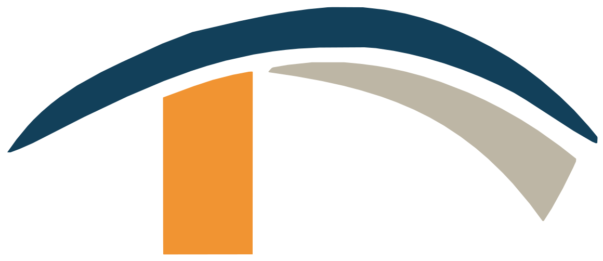

Self-assessment
Identify strengths, interests, values and skills.
Age Bridge Initiative
Helps people explore and navigate their career paths, and gain the clarity, skills and confidence to succeed.

Mentees and young job seekers who want clearer goals and a plan to reach them.
Identify strengths, interests, values and skills.
Research learning and career options, institutions, industries and job roles, including self-employment.
Set SMART goals and build a career plan.
Build professional relationships that open access to opportunities and guidance.
Meet the labor market and employers, through mentorship cafés, dialogues and exhibitions.
Activities include weekly "highs and lows", problem-solving sessions, coaching and project-based learning.